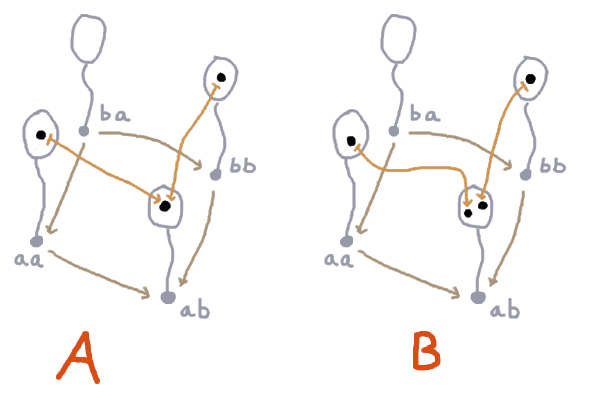
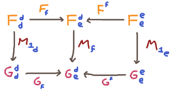
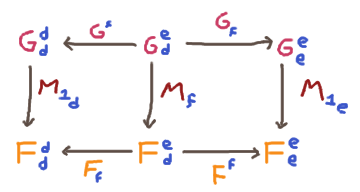
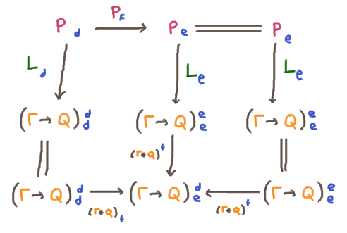
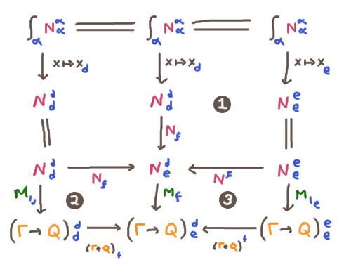

Focusing and Category Variables
On the one hand, it is the case that ends and coends seem to behave like
universal and existential quantifiers over category variables in various nice ways; you
get that two universal (or two existential) quantifiers commute
\[ \int_\alpha \int_\beta F(\alpha, \alpha, \beta, \beta) \cong \int_\beta \int_\alpha F(\alpha, \alpha, \beta, \beta)\]
\[ \int^\alpha \int^\beta F(\alpha, \alpha, \beta, \beta) \cong \int^\beta \int^\alpha F(\alpha, \alpha, \beta, \beta)\]
and also isomorphisms that resemble familiar logical equivalences like
\[ \forall x . A \imp F(x) \prequiv A \imp \forall x . F(x) \qquad
\int_\alpha A \to\ F(\alpha, \alpha) \cong A \to \int_\alpha F(\alpha, \alpha)\]
\[
\exists x . A \lor F(x) \prequiv A \lor \exists x . F(x) \qquad
\int^\alpha A +\ F(\alpha, \alpha) \cong A + \int^\alpha F(\alpha, \alpha)\]
\[
\exists x . A \land F(x) \prequiv A \land \exists x . F(x) \qquad
\int^\alpha A \x\ F(\alpha, \alpha) \cong A \x \int^\alpha F(\alpha, \alpha)\]
But I made an important mistake when jumping to the conclusion
that I can just treat them logically as if they literally are
quantifiers with the usual intro and elim rules!
A Failed Sequent Rule
A counterexample is the sequent $\forall L$ rule:
\[
\Gamma , A(t) \prov B
\over
\Gamma , \forall \alpha . A(\alpha) \prov B
\]
In fact, let's look at a very special case of this where the chosen term is just
another variable, and the context is just a single assumption:
\[
A(\beta) \prov B(\beta)
\over
\forall \alpha . A(\alpha) \prov B(\beta)
\]
The way I was thinking, this would be interpreted as the ability to somehow transform
\[
\displaystyle \int_\beta A(\beta, \beta) \to B(\beta, \beta) \qquad\qquad (*)
\]
into
\[
\displaystyle \int_\beta \left(\int_\alpha A(\alpha, \alpha)\right) \to B(\beta, \beta) \qquad\qquad (**)
\]
For arbitrary functors $A, B : \C^\op \x \C \to \rset$. But this just isn't true!
Suppose $\C$ is the arrow category $a \to b$, and suppose $A$ and $B$ are the functors

Observe that the body of $(*)$, which if I write it more carefully by
noting the variances of both variables, is the functor $\C^\op \x \C \to \rset$ given by
\[\lambda \bar \beta \beta . A(\beta, \bar\beta) \to B(\bar\beta, \beta)\]
is actually isomorphic to $A$ itself. There is exactly one element of
\[(\lambda \bar \beta \beta .A(\beta, \bar\beta) \to B(\bar\beta, \beta))(a, b) =
A(b, a) \to B(a, b)\]
because $A(b, a)$ is empty, and therefore initial in $\rset$. Similarly, there are no elements of
\[(\lambda \bar \beta \beta .A(\beta, \bar\beta) \to B(\bar\beta, \beta))(b, a) =
A(a, b) \to B(b, a)\]
because $A(a, b)$ is nonempty, while $B(b, a)$ is empty.
This means that $(*)$ is inhabited, with a unique inhabitant; since to inhabit an end is to inhabit every element
of the diagonal in a consistent way, we are forced to pick the unique element of $A(a, a)$ and the unique element
of $A(b, b)$, and notice that they have consistent transport to the unique element of $A(a, b)$.
On the other hand, $(**)$ is the same as
\[
\displaystyle \left(\int_\alpha A(\alpha, \alpha)\right) \to \left(\int_\beta B(\beta, \beta)\right)
\]
We just argued that $\int_\alpha A(\alpha, \alpha)$ has one inhabitant, and now we observe that
$\int_\beta B(\beta, \beta)$ has no inhabitants: we are forced to pick the unique element
of $B(a, a)$ and of $B(b, b)$, but these do not have common transport into $B(a, b)$. So $(**)$
has no inhabitants, and the interpretation of $\forall L$ is unsound.
But What Can We Do?
The fact that this doesn't work came as a bit of a shock to me, since all throughout
trying to interpret
the semantics of substructural logics with coends-and-ends, everything seemed to work just fine
according to my expectations that ends were $\forall$ and coends were $\exists$.
Which is to say, $\forall L$ (and also $\exists R$) seem to work fine as long as the functors
involved or the proofs involved come in particular special patterns.
I think I'm just beginning to understand what those 'special patterns' are, and the neat thing is
they seem to line up very nicely with a focusing proof theory. I'm going to go ahead and write down
what I think the answer is, even though I haven't checked (much less mechanized, which would
give me actual confidence) every last little detail, so there may still be some mistakes here.
The Syntax
I think at the very end the shape of the thing I want to prove is this: if you take what mostly
resembles ordinary focused first-order logic with a few wrinkles, then it has a sound interpretation
where every $\forall$ is an end and every $\exists$ is a coend.
The wrinkle has to do with the co/contravariance of uses of category
variables (the things we're thinking of as the 'terms' of our
first-order logic) in propositions/types. Specifically, when
we blur focus on a proposition, we want to require that certain category variables
are used with only one variance, either co- or contravariant. Call such propositions
univariant, to contrast with bivariant.
Ultimately, I think
I need to keep track of which variables have already been substituted for with either the $\forall L$
or $\exists R$, but to keep the explanation simple, I'm just going to act as if there is only one
variable $\alpha : \C$ around that we care about.
The Semantics
On the semantic side, we are still going to interpret an unfocused sequent
\[\alpha : \C ; \Gamma \prov A \]
as an end
\[\int_\alpha \Gamma(\alpha, \alpha) \to A(\alpha, \alpha) \]
Actually, now is as good a time as any to switch to a slightly more compact notation
\[\int_\alpha \Gamma^\alpha_\alpha \to A^\alpha_\alpha \]
where I'll consistently write the contravariant argument to a bifunctor $\C^\op \x \C \to \rset$ as a superscript,
and the covariant argument as a subscript.
Focused Ends
However, if we have focusing in the syntax, we need to explain what it means to interpret a focused sequent like
\[ \Gamma \prov [P] \qquad \textrm{or} \qquad \Gamma[N] \prov Q\]
So I'm going to define a pair of generalizations of ends, the 'focused ends': a left-focused end
\[\int_\alpha [F^\alpha_\alpha] \to G^\alpha_\alpha \]
and a right-focused end
\[ \int_\alpha G^\alpha_\alpha \to [F^\alpha_\alpha] \]
An inhabitant
\[M : \int_\alpha [F^\alpha_\alpha] \to G^\alpha_\alpha \]
of a left-focused end is a family of functions
\[M_f : F^d_e \to G^d_e\]
one for each morphism $f : d \to e \in \C$, such that the following diagram commutes:

An inhabitant
\[M : \int_\alpha G^\alpha_\alpha \to F^\alpha_\alpha \]
of the right-focused end is a family of functions
\[M_f : G^d_e \to F^d_e\]
one for each morphism $f : d \to e \in \C$, such that the following diagram commutes:

Given these definitions, we can define the meaning of focused sequents over one category
variable as
\[ \Gamma \prov [P] = \int_\alpha \Gamma^\alpha_\alpha \to [P^\alpha_\alpha]\]
\[ \Gamma[N] \prov Q = \int_\alpha [N^\alpha_\alpha] \to (\Gamma^\alpha_\alpha \to Q^\alpha_\alpha)\]
Focus Rules
We'd like to check
\[
{\Gamma [N] \prov Q
\over
\Gamma , N \prov Q
}
\qquad
{\Gamma \prov [P]
\over
\Gamma \prov P
}
\]
are sound. This is something we intended anyway: to check that the definition
of focused ends is in fact logically stronger
than ends as intended.
We claim there is a canonical map
\[\left(\int_\alpha [F^\alpha_\alpha] \to G^\alpha_\alpha\right) \to \left(\int_\alpha F^\alpha_\alpha \to G^\alpha_\alpha\right)\]
Recall that to be member of the ordinary end
\[\int_\alpha F^\alpha_\alpha \to G^\alpha_\alpha\] is to be a family of elements
$N_d : F^d_d \to G^d_d$ for every object $d\in\C$ such that, for any morphism $f : d \to e \in \C$, we have
\[(G_f \o N_d \o F^f = G^f \o N_e \o F_f ): F^e_d \to G^d_e \]
but if we have
\[M : \int_\alpha [F^\alpha_\alpha] \to G^\alpha_\alpha \]
then we can define
\[N_d = M_{1_d} \]
and calculate
\[G_f \o N_d \o F^f = G_f \o M_{1_d} \o F^f\]
\[= M_f \o F_f \o F^f\]
\[= M_f \o F^f \o F_f \]
\[= G^f \o M_{1_e} \o F_f\]
\[= G^f \o N_e \o F_f\]
exactly as required. The proof that a right-focused end implies an end, i.e.
\[\left(\int_\alpha G^\alpha_\alpha \to [F^\alpha_\alpha] \right)\to \left(\int_\alpha G^\alpha_\alpha \to F^\alpha_\alpha\right)\]
is symmetric.
Blur Rules
Unsound Version
Blur rules that allow a general bivariant proposition to be blurred
are unsound: for example the left blur
\[
{\Gamma, P \prov Q
\over
\Gamma [\ups P] \prov Q
}
\]
would be interpreted as
\[
{\displaystyle \int_\alpha P^\alpha_\alpha \to (\Gamma \to N)^\alpha_\alpha
\over
\displaystyle\int_\alpha [P^\alpha_\alpha] \to (\Gamma \to N)^\alpha_\alpha
}
\]
and if we look back to the counterexample up above in "A Failed Sequent Rule", and
we let $P = A$ and $N = B$ and let $\Gamma$ be empty, then we are trying to get from
$\int_\alpha A^\alpha_\alpha \to B^\alpha_\alpha$ (which we know to be the same
as $\int_\alpha A^\alpha_\alpha$, which is a singleton) to
$\int_\alpha [A^\alpha_\alpha] \to B^\alpha_\alpha$, which requires us to choose a map
$A^d_e \to B^d_e$ — that is, a map $1 \to 2$ — which is simultaneously
constrained to pick one element of $2$, and also the other. Since we can't,
$\int_\alpha [A^\alpha_\alpha] \to B^\alpha_\alpha$ is empty, and the interpretation
of this rule is unsound.
Sound Version
However, we can blur univariant propositions. We can soundly include the rules
\[
{\Gamma, P \prov Q \qquad P\ \textrm{covariant}
\over
\Gamma [\ups P] \prov Q
}
\qquad
{\Gamma, P \prov Q \qquad P\ \textrm{contravariant}
\over
\Gamma [\ups P] \prov Q
}
\]
\[
{\Gamma \prov N \qquad N\ \textrm{covariant}
\over
\Gamma \prov [\dns N]
}
\qquad
{\Gamma \prov N \qquad N\ \textrm{contravariant}
\over
\Gamma \prov [\dns N]
}
\]
Let's look at the first of these four; it interprets as
\[
{\displaystyle \int_\alpha P_\alpha \to (\Gamma \to Q)^\alpha_\alpha
\over
\displaystyle\int_\alpha [P_\alpha] \to (\Gamma \to Q)^\alpha_\alpha
}
\]
We assume that we have an element of the end
\[L \in \int_\alpha P_\alpha \to (\Gamma \to Q)^\alpha_\alpha\]
so
\[L_e \in P_e \to (\Gamma \to Q)^e_e\]
and we want to construct an element of the focused end
\[M \in \int_\alpha [P_\alpha] \to (\Gamma \to Q)^\alpha_\alpha\]
so we need
\[M_f : P_e \to (\Gamma \to Q)^d_e\]
so we define
\[M_f = (\Gamma \to Q)^f \o L_e\]
and we do a little diagram-chase to confirm that $M$ is a left focused end:

where the left half of the diagram is the end-property of $L$.
Focused Identity Rule
We can also terminate a proof by finding a matching partner for a proposition under focus,
even if that proposition is bivariant. We can include the rules
\[
{\over \Gamma, P \prov [P]}
\qquad
{\over \Gamma[N] \prov N}
\]
which interpret as
\[
{\over \displaystyle \int_\alpha \Gamma^\alpha_\alpha \x P^\alpha_\alpha \to [P^\alpha_\alpha]}
\qquad
{\over \displaystyle\int_\alpha [N^\alpha_\alpha] \to(\Gamma \to N)^\alpha_\alpha}
\]
And if we define the right- and left-focused ends
\[L_f(g, p) = p \qquad R_f(n) = \lambda g . n \]
and then checking the focused end diagrams involves just commutative squares that have identities on half their sides,
because the $\Gamma$s are essentially not involved.
Focused Quantifier Rules
We finally come to the remediation of the problem we had at the beginning; we wish to validate synchronous
quantifier rules such as
\[
{
\Gamma, N(x) \prov Q
\over
\Gamma, [\forall x . N(x)] \prov Q
}
\qquad
{
\Gamma \prov P(x)
\over
\Gamma \prov [\exists x . P(x)]
}
\]
which we interpret as
\[
{
\displaystyle\int_\beta \left[ N^\beta_\beta\right] \to (\Gamma\to Q)^\beta_\beta
\over
\displaystyle\int_\beta \left[\int_\alpha N^\alpha_\alpha\right] \to (\Gamma\to Q)^\beta_\beta
}
\qquad
{
\displaystyle\int_\beta \Gamma^\beta_\beta \to \left[ P^\beta_\beta\right]
\over
\displaystyle\int_\beta \Gamma^\beta_\beta \to \left[\int_\alpha P^\alpha_\alpha\right]
}
\]
The thing that will save us is the stronger induction hypothesis that
we have not an inhabitant of a mere end, but a focused end. Let's consider the negative case:
we have
\[M : \displaystyle\int_\beta \left[ N^\beta_\beta\right] \to (\Gamma\to Q)^\beta_\beta\]
so
\[M_f : N^d_e \to (\Gamma\to Q)^d_e\]
and we want to construct
\[L : \displaystyle\int_\beta \left[\int_\alpha N^\alpha_\alpha\right] \to (\Gamma\to Q)^\beta_\beta\]
so
\[L : \left(\int_\alpha N^\alpha_\alpha\right) \to (\Gamma\to Q)^d_e\]
We therefore define
\[L_f(x) = M_f (N_f(x_d))\]
and chase the diagram

to confirm that $L$ is a left-focused end, observing that cell $(1)$ is the end-property of the argument
$x$ to $L_f$, and cells $(2)$ and $(3)$ are the fact that $M$ is a left-focused end.